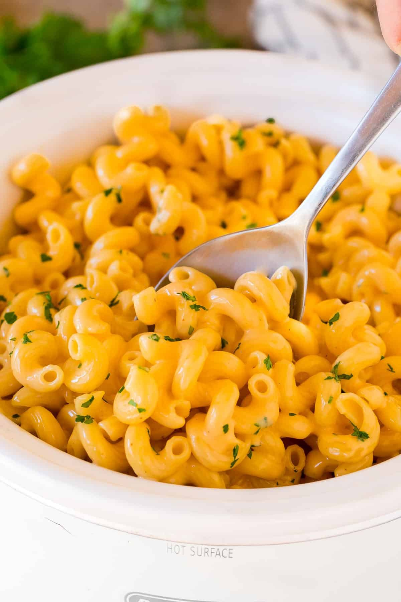

macaroni and cheese

description
ingredients
- 8 oz (about 225g) elbow macaroni or any pasta shape you prefer
- 4 tablespoons (1/2 stick) unsalted butter
- 1/4 cup all-purpose flour
- 2 cups milk
- 2 cups shredded sharp cheddar cheese
- 1 cup shredded mozzarella cheese
- 1/2 teaspoon salt
- 1/4 teaspoon black pepper
- Cooking spray or extra butter for greasing the baking dish
steps
- Preheat your oven to 350°F (175°C).
- Cook the macaroni according to the package instructions in a large pot of salted boiling water until al dente. Drain and set aside.
- In the same pot, melt the butter over medium heat.
- Once the butter is melted, add the flour and whisk constantly until smooth and bubbly, about 2 minutes.
- Gradually pour in the milk while whisking constantly to prevent lumps from forming.
- Continue to cook and whisk until the mixture thickens, about 5 minutes.
- Add the shredded cheddar cheese and mozzarella cheese to the sauce, stirring until melted and smooth.
- Season the cheese sauce with salt, black pepper, and paprika if using.
- Add the cooked macaroni to the cheese sauce and stir until well coated.
- Pour the macaroni and cheese mixture into the prepared baking dish, spreading it out evenly.
- If desired, sprinkle breadcrumbs evenly over the top of the macaroni and cheese for a crunchy topping.
- Bake in the preheated oven for 25-30 minutes, or until the top is golden brown and the edges are bubbly.
- Let the mac and cheese cool for a few minutes before serving.